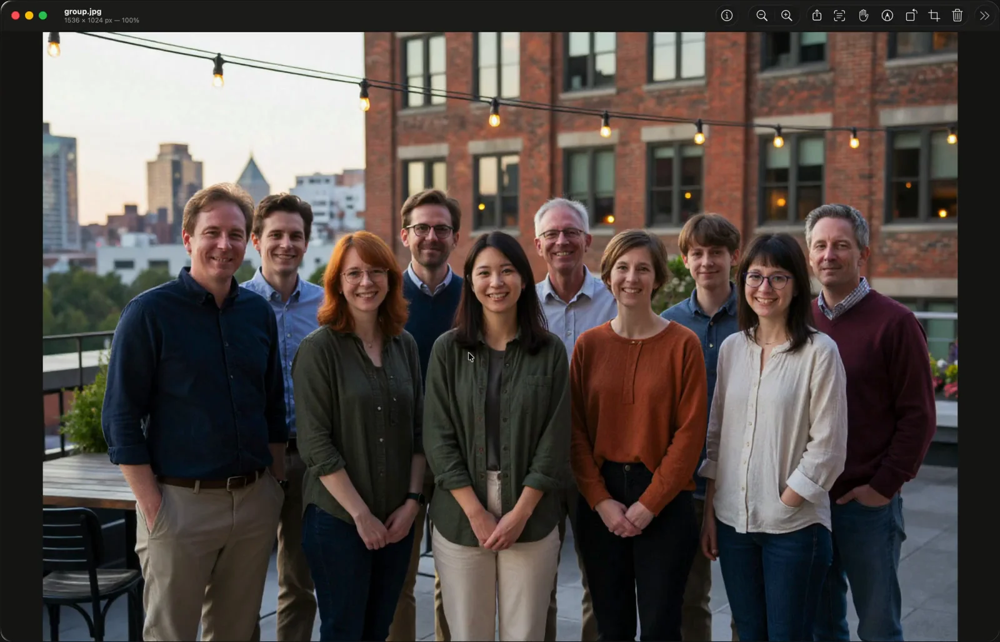
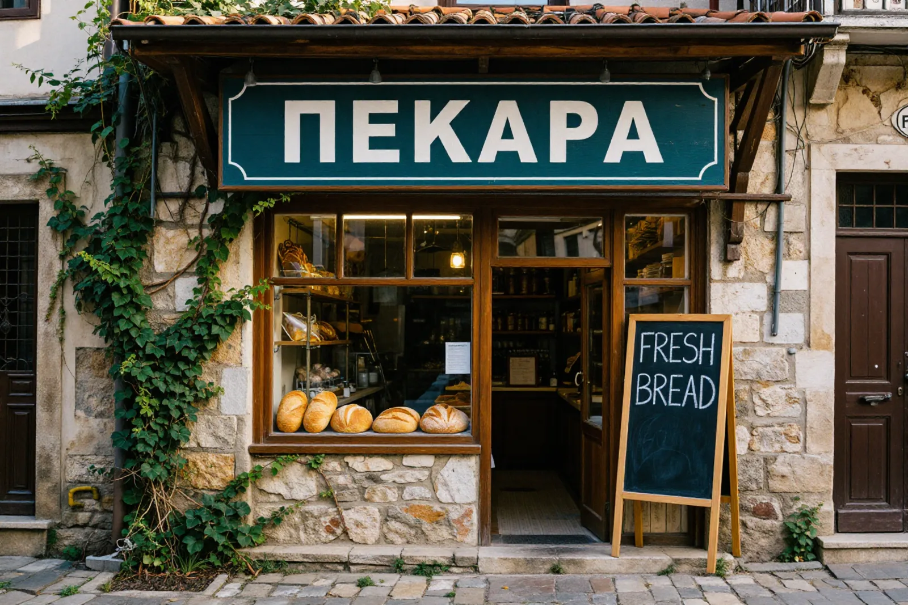
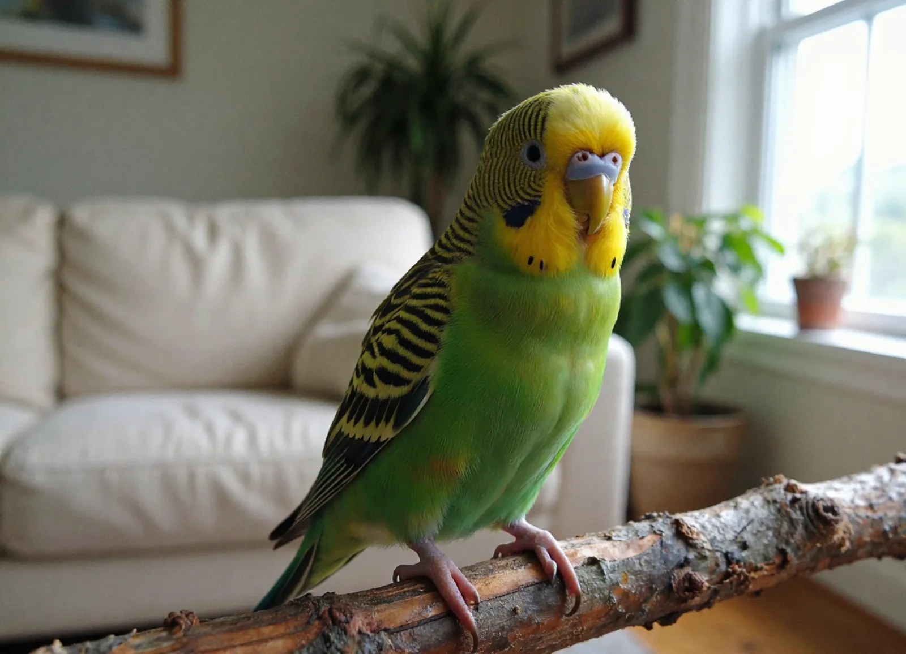
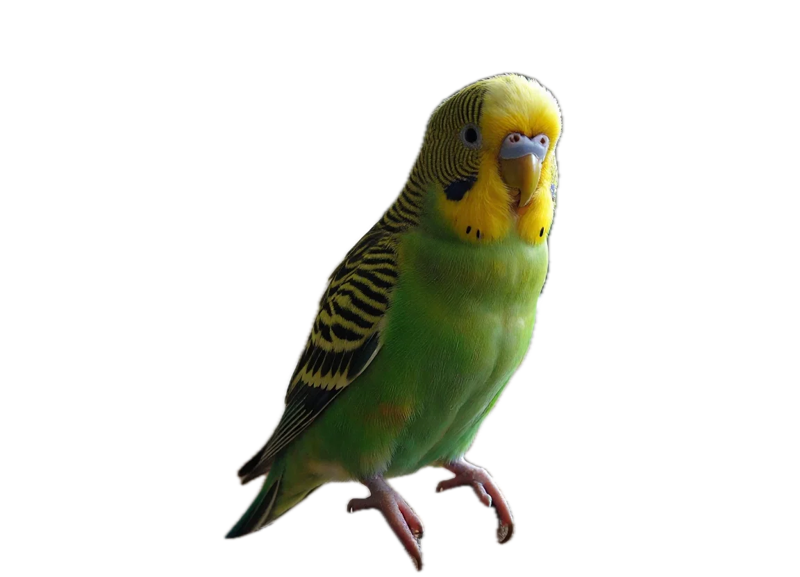

MikiViewer is a fast, native image viewer for Mac. Flip through whole folders, zoom without a stutter, crop and mark up in a click, even select the text inside a photo, and take a screenshot from anywhere with ⌃P. Free, with no account.

Open a picture and it’s simply there, sharp and fast. Everything else stays out of sight until you reach for it.
Double-click any image and it’s there. No library to import into, nothing to organise first.
Open one picture, then press the arrow keys to flip through every other picture in its folder, in Finder’s order.
Actual size, fit, or zoom to a selection. Then go full screen or start a slideshow.

MikiViewer reads text as soon as a picture opens. Drag across it, double-click a word, press ⌘C. Right-click to look it up, translate it or search for it.
A crop frame appears straight away. Free, Square, 4:3 or 16:9, then Return.
Arrows, shapes, text, sketches and your signature, editable until you save.
Exposure, colour and auto levels. Rotate, flip and resize in a click.
All the text in a picture, or in an area you select, ready to edit and copy.
Share, print, export to another format or straight to PDF.
Every change can be undone, so trying things out is free.
Sharing a group photo or a screenshot? Protect Privacy suggests things you may not want to send, like faces, card numbers, emails or passwords. You choose what to blur or cover, in one click.
Suggestions are a helping hand. Always give the picture a final look before you share it.
Right-click and choose Copy Subject. A person, pet or object comes away from its background, ready to paste.


Subject copiedPress one shortcut anywhere on your Mac and the whole screen opens in MikiViewer, ready to crop, mark up, hide details or save. Set it up once in about a minute.
Works in any app, as long as MikiViewer is running. Try pressing it on this page.
Download the installer below and open MikiViewer once. You can close its windows with ⌘W; it keeps running quietly so the shortcut stays ready. Quitting with ⌘Q turns the shortcut off.
The first time, MikiViewer asks for permission. Click Open System Settings and turn on MikiViewer in Privacy & Security ▸ Screen & System Audio Recording. Quit MikiViewer with ⌘Q and open it again so macOS applies it.
Open System Settings ▸ General ▸ Login Items & Extensions, click + under Open at Login and choose MikiViewer. From then on, ⌃P works right after you log in.
If you’d rather not have two screenshot tools, open System Settings ▸ Keyboard ▸ Keyboard Shortcuts… ▸ Screenshots and untick the ones you don’t want, like ⌘⇧3 and ⌘⇧4.
Since 1.6.6, MikiViewer keeps its screen recording permission when you update. Coming from an older version, macOS sees it as a new app one last time: in Screen & System Audio Recording, select MikiViewer, remove it with −, then open MikiViewer and press ⌃P to allow it again. Quit with ⌘Q and reopen MikiViewer.
Open MikiViewer.dmg and drag MikiViewer onto Applications, choosing Replace if asked.